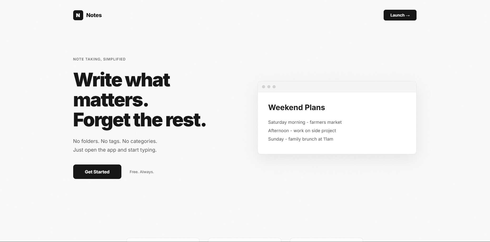

[ Describe the project: what does it do, why did you build it? 2–4 sentences. ]
[ The interesting part: what tech did you use and what problems did you solve? Feel free to use a list: ]
[ 1–3 honest takeaways. This is the part people actually like reading. ]
screenshots
drop more screenshots in /img
and copy the figure block